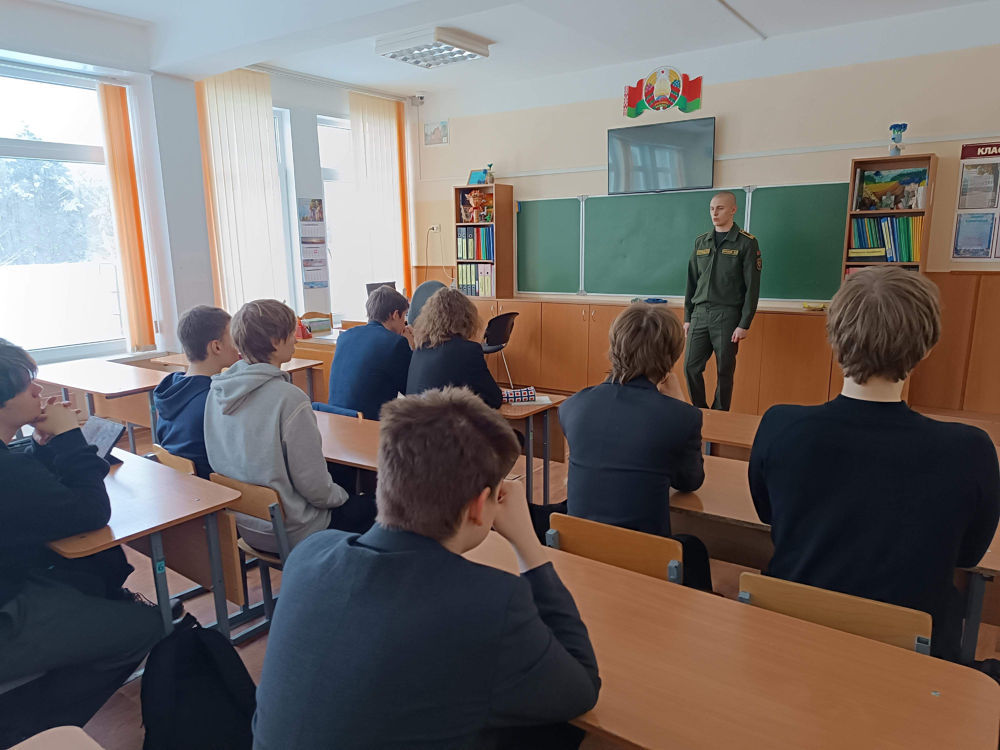
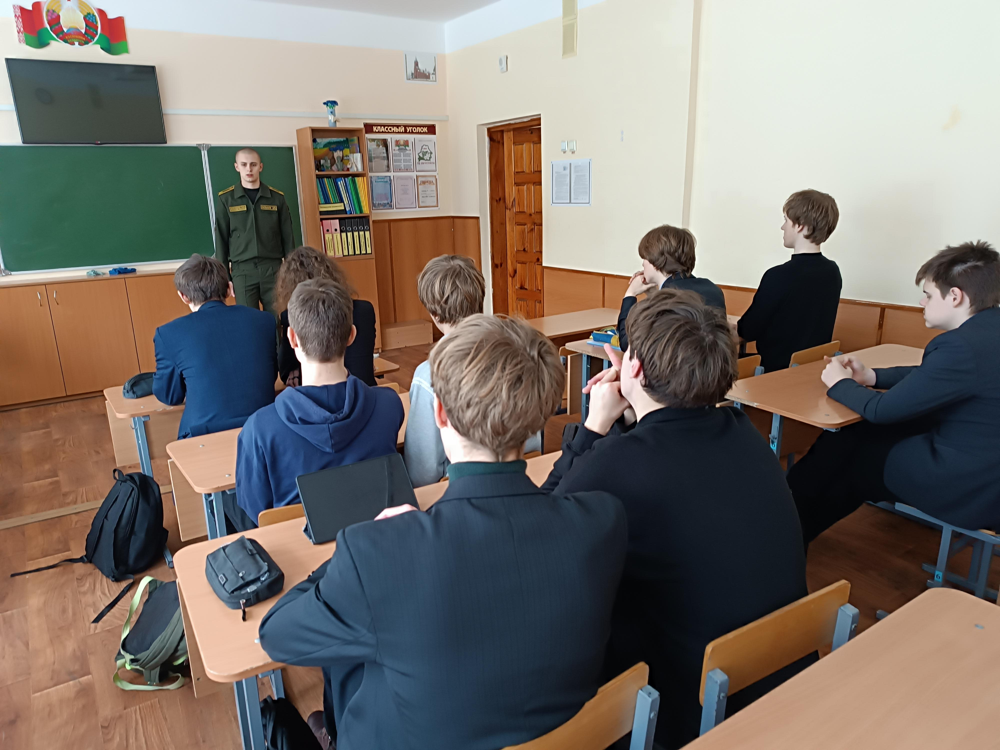

ПРОФОРИЕНТАЦИОННАЯ ВСТРЕЧА С КУРСАНТОМ ВОЕННО-ТЕХНИЧЕСКОГО ФАКУЛЬТЕТА БНТУ
6 февраля учащиеся 11 «А» класса приняли участие в профориентационной встрече с курсантом военно-технического факультета Белорусского национального технического университета Дмитрием Латышевым. Дмитрий обучается на 1 курсе учебного заведения по специальности «Строительство зданий и сооружений», в рамках профилизации «Промышленное и военное строительство».

Будущий офицер довел ребятам особенности поступления на военный факультет в 2026 году и проходные балы за 2025 год. Также Дмитрий рассказал гимназистам об особенностях будущей профессии и условиях учебы, быта, досуга курсантов, перспективах службы, социальных льготах, предоставляемых государством военнослужащим, и ответил на все вопросы гимназистов.
